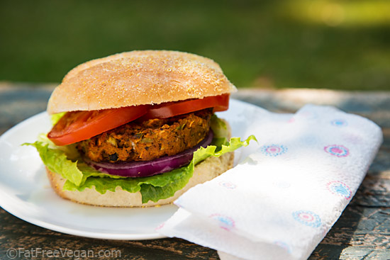

Sweet Potato and Black Bean Veggie Burgers
Ingredients
- 1½ pounds sweet potatoes (smaller potatoes cook faster)
- ⅓ cup uncooked millet or quinoa (or 1 cup cooked)
- 1 cup old fashioned oats (use certified gluten-free oats if you are avoiding gluten)
- 1 can (15 ounces) black beans, rinsed and drained (or 2 cups cooked black beans)
- ½ small red onion, diced
- ½ cup lightly packed fresh cilantro leaves, chopped
- 2 teaspoons cumin powder
- 1 teaspoon chili powder
- 1 teaspoon chipotle powder or smoked hot paprika
- ½ teaspoon cayenne powder (optional, to taste)
- ½ teaspoon salt
- High quality vegetable oil for cooking burgers (or coconut oil, if you don't mind the coconut taste, olive oil may burn)
- 8 whole wheat hamburger buns (optional)
- your favorite burger fixings (avocado or guacamole, tomato or pico de gallo, lettuce, sprouts, ketchup, hot sauce, mustard, pickles, cheese)
Instructions
- Roast the sweet potatoes: Preheat the oven to 400 degrees Fahrenheit. Slice the sweet potatoes down the center lengthwise. Place the sweet potatoes cut side down on a rimmed baking sheet. Roast until they yield to a
gentle squeeze, 30 to 40 minutes or longer. Once the sweet potatoes are cool enough to handle, remove the skin (it should pull off easily) and roughly chop the insides. Set aside to cool completely.
- Cook the millet: In a small saucepan, bring 1 cup of water to boil. Stir in the millet, reduce heat to low and simmer, covered, until tender (about 25 minutes). Drain off any remaining liquid and set aside to cool.
OR cook the quinoa: Rinse the quinoa in a fine mesh colander, then combine with ⅔ cup water in a small saucepan. Bring the mixture to boil, then cover and reduce heat to maintain a gentle simmer. Simmer for 15 minutes,
then remove from heat and let the quinoa steam with the lid on for 5 minutes. Then drain off any excess water and set aside to cool.
- Grind the oats: Use a food processor or blender to grind the oats until the flakes are broken up, but not as fine as flour.
- Mix the burgers: In a large mixing bowl or the bowl of your electric mixer, combine the cooled sweet potatoes and millet, black beans, onion, cilantro, cumin, chili powder, chipotle or paprika, cayenne (optional, add to taste for spicier burgers) and salt. Use a potato masher, big mixing spoon or the paddle attachment of your mixer to mix really well. It's ok if the black beans get smashed in the process.
- Mix in the oats: Sprinkle the ground oats over the mixture and mix well with a big spoon until the mixture holds together when you shape a portion into a patty. If possible, cover and refrigerate the mixture for best results (the patties will hold together better during cooking if they are chilled first).
- Shape the burgers: Use a measuring cup to measure out ½ cup of the mixture. Gently shape it into a patty about 3½ inches in diameter. Use your hands to gently flatten the burgers and smooth out any jagged edges. Repeat the process for each patty; you should end up with 8. If you would like to toast your hamburger buns, preheat the oven to 350 degrees now.
- Pan fry the burgers: Heat 1 tablespoon oil in a large cast iron or non-stick skillet over medium heat. When it's hot, place several burgers in the pan, leaving enough room to flip them. Cook each patty until browned and heated through, about 3 to 4 minutes per side. Add 1 tablespoon oil to the skillet for each pan of burgers you fry.
- Toast the buns (optional): Place the buns on a baking sheet, cut sides up, and bake until lightly toasted, about 2 to 3 minutes.